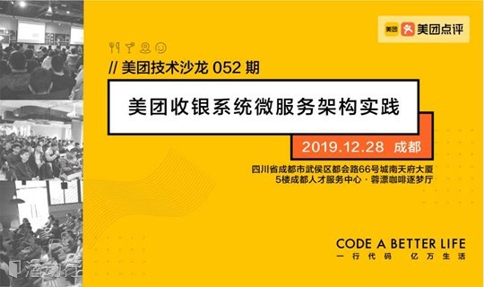
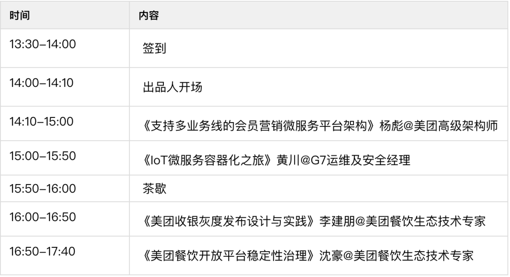
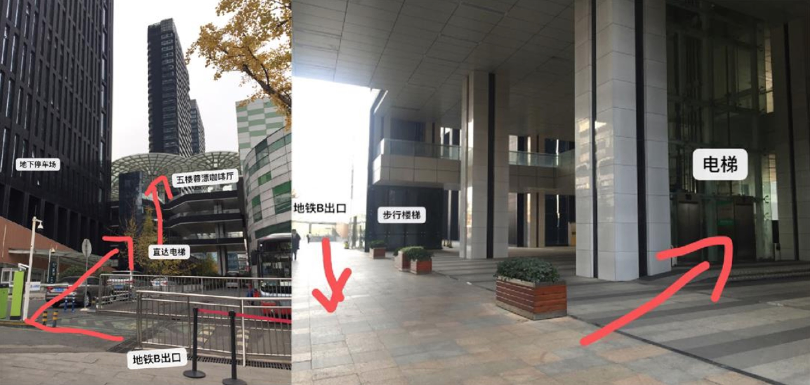

【美团技术沙龙】由美团技术团队和美团科协主办，每期沙龙邀请美团及其他互联网公司的技术专家分享来自一线的实践经验，覆盖各主要技术领域。

活动时间：2019年12月28日 14:00-17:30
活动地址：四川省成都市武侯区都会路66号城南天府大厦（5楼成都人才服务中心）·蓉漂咖啡逐梦厅
报名链接：点我报名
/ 出品人 /
李战涛 | 美团高级技术专家
2017年加入美团，目前负责美团收银系列产品研发&团队管理工作，在美团期间，推出美团收银青春版等产品，目前美团收银产品在餐饮收银线上、线下市场市占均是第一。之前在小米工作过若干年，负责小米商城的在线促销系统、小米售后&仓库系统、大数据团队研发管理工作。
活动简介
美团收银系统为餐厅经营管理提供一体化的解决方案，在to B产品上，做好PaaS平台建设，打造核心竞争力，修炼好大团队规模化高效研发方法论，以便能深入参与广大餐饮商家生意，帮商家提高经营效率、改进经营质量，逐步建立和拓展健康的餐饮合作生态体系；同时打通线上和线下，让美团C端能提供更丰富的产品形态，提升用户就餐体验。
本次技术沙龙主要围绕美团收银系统微服务平台架构设计，以会员营销平台领域为例介绍微服务的设计原则，并且如何通过设计良好的灰度发布实践来保障发布的安全和质量，以及亿级流量的开放平台如何为合作生态提供稳定可靠地持续服务能力，也希望与业界技术同学一起交流学习。
日程安排

分享介绍
主题一：支持多业务线的会员营销微服务平台架构
杨彪 | 美团高级架构师
2018年加入美团，主要负责RMS收银会员营销平台。原蚂蚁金服专家，著有《分布式服务架构：原理、设计与实战》和《可伸缩服务架构：框架与中间件》两本书。有近10年互联网、游戏和支付相关的工作经验，先后就职于酷我音乐、千橡集团、掌趣科技和阿里巴巴。
内容简介
在RMS收银业务快速发展下，会员营销平台做为基础的服务，需要支持线上线下打通的能力，即要为线下B端商家提供会员营销管理功能，又要为线上C端会员提供丰富的产品形态，还要支持多产线业务的快速发展。所以会员平台如何支持多业务的流程及功能复用、以及差异功能支持扩展等，这些都是架构设计实践过程中遇到的问题和挑战，希望通过本次分享和大家交流讨论。本次分享大纲：
不同规模系统架构复杂性原因和背景分析，以及合适的组织和系统架构的关系。
多业务线的平台服务架构的扩展性和隔离性问题讨论。
主题二：IoT微服务容器化之旅
黄川 | G7运维及安全经理
目前负责G7运维开发及安全团队管理工作。多年云计算研发工作经验，精通Linux虚拟化，擅长DevOps、微服务、容器、网络及存储安全。
内容简介
介绍公司业务特点，深度解析具有物联网特色的微服务&容器化落地实践，容器化带来的收益及过程中的曲折，解决物联网设备接入管理及快速扩容问题，提高CI/CD平台伸缩性。分享大纲如下：
K8s推广目的。
K8s容器化带来的好处。
迁移K8s的挑战及解决方案。
未来规划。
主题三：美团收银灰度发布设计与实践
李建朋 | 美团餐饮生态技术专家
2017年入职美团，主要负责美团收银灰度平台与支付平台；之前在高德，经历了高德开放平台从十亿到百亿级流量的过程。
内容简介
美团收银旨在为餐饮商家提供一体化的解决方案，提高餐厅经营效率；涉及到了很多业态，如快餐、火锅、茶饮等，业态多、业务复杂，灰度设计与实施中遇到了很多问题与挑战，本文会结合美团收银灰度实施中的一些真实案例，与大家一起分享、交流经验。分享大纲如下：
复杂系统灰度设计会有哪些问题以及如何解决。
灰度落地中的衍生问题如KV、DB、中间件等如何解决。
使用灰度发布后，如何提升上线效率。
主题四：美团餐饮开放平台稳定性治理
沈豪 | 美团餐饮生态技术专家
2017年入职美团，一直负责美团餐饮开放平台的技术工作，经历了餐饮开放平台从千万级流量到亿级流量的过程。之前在华为、Veritas等公司从事分布式系统的基础架构研发工作。
内容简介
美团餐饮开放平台基于美团点评餐饮业务（包括外卖、团购、闪惠、点餐、排队、预订等），为第三方平台及众多餐饮软件公司，提供了更加便捷地操作、更加迅速地信息传递、以及更高效地业务管理方式，从而提升了商家的经营效率以及市场竞争力，降低了经营成本，同时提高了消费者的消费体验，平台致力于打造餐饮行业健康生态。开放平台业务流量巨大，平台稳定性要求高，此次主要介绍系统建设的高可用工作。分享大纲如下：
开放平台系统会有哪些常见的问题以及如何解决。
往期活动PPT及视频干货看这里
美团技术沙龙目前已在北京、上海、厦门、成都等城市成功举办了51场，吸引了2W+工程师报名参会，覆盖前端、后台、系统、算法、测试、运维等技术领域，往期PPT及视频资料已整理，我们愿意帮助更多的同学在技术成长的路上不断狂奔！
往期活动PPT及视频干货：
https://tech.meituan.com/salon/#/ （请在微信中查看 ）
感谢活动主办方：美团技术团队 美团科学技术协会
宣传合作方：活动行
地址地址：四川省成都市武侯区都会路66号城南天府大厦（5楼成都人才服务中心）·蓉漂咖啡逐梦厅
地铁线路：1号线/7号线 火车南站B口出
具体线路请看下图：
